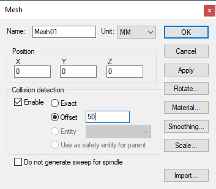

The Tools/Holders/Heads Dialog
This dialog provides the ability to add tool and associated holder definitions to the simulation, as well as to select the active head on a machine that supports multiple head attachments. The term “Holder” is used by VM to refer to a device that securely holds the tool in the spindle. The term “Head” is used by VM to refer to an exchangeable head (e.g., a right angle head attachment).
Tool and holder definitions are automatically saved in the verification setup (.vsw) file when the program is completed. This setup file will be reused on subsequent runs to quickly reestablish the tooling necessary for an accurate simulation. Tool and holder definitions from another part program can be imported into the current session by pressing the Import button and then selecting the verification setup (.vsw) file of the other part program.
Tooling definitions, like fixture and part definitions, are not a required element for simulation, but if used they add to simulation accuracy and realism. VM attaches solid model representations of holders and tools to the spindle control point (SCP). Once attached, they become a part of the collision detection process.
The left side of the dialog lists the known tools, holders and heads. Heads are defined in the model and the sole purpose of this dialog is to select the active head (see “Heads” below). The middle section of the tool/holder dialog contains the various controls that allow for the creation and modification of tools and holders. The right side of the tool/holder dialog has two viewing panes that are dynamically updated to reflect modifications done in the center section.
The upper right pane is the construction view. Depending on the type of tool or holder, this can either be in a 2D or 3D view format. For the 2D format, hold the left-mouse button down to pan the view, hold and release the right-mouse button to zoom to a selected region, and use the mouse wheel to zoom in and out. Double-click in the view to reset the zoom factor to make the tool or holder fully visible. The standard VM controls apply for navigating a 3D view.
The lower right pane is a 3D assembly preview centered on the tool or holder. The standard VM controls apply for navigating a 3D view. Holding and then releasing the left-mouse while moving horizontally will impart a spin on the object; click once in the window to remove the spin. The right-mouse pop-up context menu provides additional functions to aid in viewing the tool or holder.
 Some tool and holder definitions are identified as being “Generic”, which means that the tool or holder shape is defined using an STL mesh. These are added to the tool and holder definitions using the same Mesh Component dialog as is used in QUEST to import machine components into the model. From this dialog, you can specify the name of the STL mesh component, its position and orientation in space and its material color properties. An Import button on the dialog is used to specify the STL file to read and the units of measure of the STL object. A Scale button on the dialog can be used to change the size of the imported object if required. The Keep as an external reference setting saves a reference to the STL in the verification setup (.vsw) file instead of the object itself. Note that the Collision detection options are not available since tools and holders are always tested for exact collision.
When exiting the Tools/Holders/Heads dialog, VM will validate the tool and holder dimensions against the Controller window tool and diameter compensation amounts. If the tool compensation amounts do not agree with the tool definitions, a dialog will appear listing suggested tool compensation changes highlighted in blue. Selecting OK will automatically adjust the tool compensation for selected tools.
Tools
Select the Tools tab to add, modify or delete tool definitions. Select the New button to define a new tool. Select an existing tool definition to modify that tool. Select one or more tools and press the Delete button to remove the selected tools.
The following tool types are available:
The tool table lists the following information for each tool:
ID: Identifies the tool using the native form of tool numbering on the controller.
Type: Lists the tool type as defined when the tool was created or last modified.
Unit: Shows the units of measure used for non-angular tool dimensions.
Lock: GENER will automatically define a default milling or drilling tool if a tool definition does not exist for the one being loaded. GENER uses the APT CUTTER command to define the shape of the tool. Tools defined in this way have a cutting length equal to the total tool length, and do not have a shank or associated holder. Automatically created tools are by default “unlocked” (i.e., the Lock state is “No”); meaning that their definition will change each time a CUTTER command is encountered. Any tool that is created manually or that is subsequently modified is set locked (i.e., the Lock state is “Yes”) so that these modifications will not be overridden. CERUN does not have the ability to automatically define tools. Double-click on this field to change the locked state of a tool.
Default pocket: Primarily used when simulating tool changers on models that define tool pocket locations. Double click on this field to choose the pocket where the tool will reside.
Current pocket: The current location of the tool. This field is updated dynamically by VM as tools are loaded. You can manually insert a tool into the spindle by double clicking on this field and selecting the primary tool axis.
Individual tool definitions include the above properties, as well as the following ones that are common to most tools:
Holder: Lists zero or more holders for the tool. The tool is attached to the lowest holder in the list, and each holder in the list is attached to the one above it, with the topmost holder in the list being attached to the model’s spindle control point. To add a holder, double-click an empty line in the list, and then type the holder name or select one from the drop-list. To modify a holder, select an existing holder in the list and enter the new holder name. The order of holders can be rearranged by dragging and dropping. Use the Delete key to remove selected holders from the list. Holder names are listed in red if the holder has not yet been defined.
Usage: Specifies the intended use of the tool, which can be one of “Finishing”, “Semi-Finishing” or “Roughing”. A tool’s intended usage affects the in-process stock machining tolerance when the Material Removal Simulation (MRS) option is enabled. A “finishing” tool will use the gouge tolerance for MRS simulation; a “semi-finishing” tool will use a 5 times coarser tolerance; and a “roughing” tool will use a 10 times coarser tolerance. The gouge tolerance amount is defined in the Simulation»Options dialog Tolerances tab. Manufacturing Extractors will set the tool usage if this information is available from the CAM system, otherwise the usage will be set to Finishing.
Cut Color: Specifies the normal cutting color to use with the selected tool on the in-process stock when the Material Removal Simulation (MRS) option is enabled. The selection drop-down provides “Auto”, “Custom” and “Stock” choices. The “Auto” selection will automatically assign a color (from a pallet of 12 basic colors) to the tool each time it is loaded. The “Custom” selection allows any color to be chosen from a standard color picker. The “Stock” selection will use the actual stock color instead of a special color.
Lathe Tool Type
Select “Lathe” as the tool type to define a turning tool insert/holder combination. The following lathe insert types can be defined:
Round: A round or circular insert.
Trigon: A three cornered insert resembling a triangle, but with an intermediate angle on the sides, to allow for a higher included angles at the tips.
Diamond: A four-sided insert with two acute angles.
Symmetrical: Any “n” equal sided insert.
Thread: A three cornered threading insert, with a tooth shape on each corner.
Groove: A single or double-sided insert that can be used for threading, grooving or cut-off.
Profile: An insert defined by a 2D profile.
Generic: An insert defined by an STL mesh.
Inserts are defined in the ZX plane of the machine. The blue dotted line represents the positive Z-axis of the machine. The red dotted line represents the positive X-axis of the machine. Tool path traces are drawn originating from the center point of the fillet radius of the insert. Currently, tool nose compensation is only available from the center of the insert nose (i.e., P0 or P9 type compensation) and not from the theoretical tool tip.
All turning tools have the following settings:
Units: The unit of measure for non-angular values. Angles are always measured in degrees.
ID: Identifies the tool using the native form of tool numbering on the controller.
Left/Right hand: Controls how the insert is mated with the holder.
Colors: Defines the display color of the lathe insert tool. When the MRS license option is enabled, the Cut selection defines the color to show the cutting action of the tool on the in-process stock. See the Cut Color description above for more information.
Usage: Specifies the intended use of the tool, which can be one of “Finishing”, “Semi-Finishing” or “Roughing”. A tool’s intended usage affects the in-process stock machining tolerance when the Material Removal Simulation (MRS) option is enabled. See the Usage description above for more information.
Holder: Lists zero or more holders for the tool. See the Holder description above for more information.
The Round, Trigon, Diamond, Symmetrical, Thread and Groove turning tools have one or more additional parameters follows:
Number of sides (n): Defines the number of cutting edges on the insert. Applicable to Symmetrical and Groove insert types only.
Inscribed circle (r): An ANSI standard measure of insert size. Setting this field automatically adjusts the cutting length dimension.
Internal angle (t): Specifies the angle between adjacent sides of the insert at the cutting edge. Applicable to Trigon and Diamond insert types only.
Corner radius (cr): The radius of the cutting edge of the insert. Not applicable for Round insert types.
Tooth width (tw), height (th), offset (to), clearance (tc): Defines the form shape of the thread or groove insert. Applicable to Thread and Groove insert types only.
Width (j): The width of the insert. Applicable to Groove insert type only.
Joint radius (j): The radius of the center hole. Not applicable to Groove insert type.
Height (h): The height of the insert.
Clearance angle (a): The relief angle of the insert.
The Profile turning tool has a different set of parameters, as follows:
Cutting profile: Defines the outer edge of the insert as a 2D ZX axes profile, with one set of coordinates per line. An R value defines an arc with given radius tangent to the profile segments that immediately precede and follow it. The right-mouse context menu can be used to insert and remove points from the table.
ZX Offset: Defines the offset from the contour origin to the holder mating point.
Height (h): The height of the insert.
Clearance angle (a): The relief angle of the insert.
Finally, the Generic turning tool is defined as follows:
Name: A 3D STL shape defining the insert. For material removal purposes, the insert will be intersected along the cutting plane and the resultant 2D shape used for MRS calculations.
Select the Mesh button to modify the mesh properties (see the Mesh dialog description above).
Tool mounting offset: Defines the offset from the STL origin to the holder mating point.
Mill Tool Type
Select “Mill” as the tool type to define a milling or drilling tool/holder combination. The following mill tool types can be defined:
End mill: A milling tool with sharp corner radius.
Ball nose: A milling tool with corner radius equal to ½ the tool diameter.
Bull nose: A milling tool with non-zero corner radius less than ½ the tool diameter.
Drill: A typical drilling tool.
APT 7: A milling tool whose shape is defined by the APT standard CUTTER definition.
Profile: A tool defined by a revolved 2D profile.
Generic: A tool defined by one or more cutting and non-cutting STL meshes.
Milling tools, with the exception of Generic, are all defined in a 2D profile view. The blue dotted line represents the positive Z-axis of the machine. The red dotted line represents the positive X-axis of the machine. Tool path traces are drawn originating from the center bottom tip of the tool.
All milling tools have the following settings:
Units: The unit of measure for non-angular values. Angles are always measured in degrees.
ID: Identifies the tool using the native form of tool numbering on the controller.
Number of flutes (n): Defines the number of cutting teeth, edges, inserts or flutes on the tool.
Left/Right hand: Defines the cutting direction.
Colors: Defines the display colors for the shank (if used), body and cutting portions of the tool. When the MRS license option is enabled, the Cut selection defines the color to show the cutting action of the tool on the in-process stock. See the Cut Color description above for more information.
Usage: Specifies the intended use of the tool, which can be one of “Finishing”, “Semi-Finishing” or “Roughing”. A tool’s intended usage affects the in-process stock machining tolerance when the Material Removal Simulation (MRS) option is enabled. See the Usage description above for more information.
Holder: Lists zero or more holders for the tool. See the Holder description above for more information.
The End mill, Ball nose, Bull nose, Drill and APT 7 milling tools have one or more additional parameters follows:
Tool diameter (d): The diameter of the cutting portion of the tool, measured at the intersection of the bottom and sides of the tool.
Cutter length (l): The total length of the tool from bottom tip to the mating point (TCP) of the holder, or if not using holders, to the spindle control point (SCP).
Flute length (fl): The cutting length of the tool, measured from the bottom tip.
Corner radius (cr): The corner radius of the tool. Not applicable for end mills (whose corner radius is zero), ball nose end mills (whose corner radius is ½ the diameter), or for drills.
Bottom angle (ba): The angle of the bottom cutting edge of the tool. The angle must be zero or larger. Only applicable for drills and APT 7 cutter types.
Side angle (sa): The angle of the side cutting edge of the tool. The angle can be positive or negative. Only applicable for APT 7 cutter types.
Body offset (o): Defines the relief on the tool diameter to apply to the cutter body portion of the tool.
Set shank: Select this checkbox to define the shank of the tool extending above the mating point with the holder or spindle.
Shank length (sl): The length of the shank.
Shank diameter (sd): The diameter of the shank.
The Profile milling tool has a different set of parameters, as follows:
Cutting: Defines the radial and axial coordinates of the cutting tool profile, with one set of coordinates per line. An R value defines an arc with given radius tangent to the profile segments that immediately precede and follow it. Only define the right half profile of the tool (i.e., zero or positive radial values only). Positive axial values are measured downwards, from the mating point of the holder (TCP) or spindle face (SCP) towards the bottom tip of the tool. The right-mouse context menu can be used to insert and remove points from the table, and to insert a “delimiter” line that separates the list into multiple distinct cutting profiles.
Non-Cutting: Defines the radial and axial coordinates of the non-cutting tool profile, in the same fashion as described above for the cutting profile.
Body offset (o): Defines the relief on the tool diameter to apply to the non-cutting profiles portion of the tool.
Finally, the Generic milling tool is defined as follows:
Tool mesh components: Defines one or more cutting and non-cutting mesh components of the tool. Use the right-mouse context menu to “Import” a mesh from an STL file (see the Mesh dialog description above) or to select a lathe tool insert already defined in the tool table. Once loaded, the Dup column defines the number of instances of the mesh to be equally spaced around the tool center and the Angle column specifies an angular XY plane offset. For material removal purposes, meshes indicated as cutting (i.e., with the Cut column selected) will be revolved around the tool center and the resultant 3D shape used for MRS calculations. The right-mouse context menu can be used to insert and remove meshes from the table, and to modify the properties of individual meshes. The order that the meshes are listed in the table is not important.
Tool mounting offset: Defines the xyz offset from the tool tip to the tool origin (holder mating point).
Probe Tool Type
Select Probe as the tool type to define a straight or star stylus probe:
Straight: A probe with a single straight stylus.
Star: A probe with a multi-tip star stylus (5 balls).
When a probe tool is loaded, VM is aware that it is a probe and that it cannot be used for cutting. VM has macro functions and variables that can be used to query the results of a probe touch.
Probe tools are all defined in a 2D profile view. The blue dotted line represents the positive Z-axis of the machine. The red dotted line represents the positive X-axis of the machine. Tool path traces are drawn originating from the center bottom tip of the probe.
All probe tools have the following settings:
Units: The unit of measure for non-angular values. Angles are always measured in degrees.
ID: Identifies the tool using the native form of tool numbering on the controller.
Stylus length (sl): The total length of the probe from the center of the bottom ball to the mating point (TCP) of the holder, or if not using holders, to the spindle control point (SCP).
Stylus diameter (sd): The diameter of the stylus.
Probe radius (r): The radius of the probe ball.
Colors: Defines the display colors for the stylus (the “Base”) and ball (the “Probe”) portions of the probe tool.
Holder: Lists zero or more holders for the tool. Probe tools define just the stylus; the probe body can be defined as a holder to which the stylus is then attached. See the Holder description above for more information.
The Star probe tool has the following additional parameters:
Height (h): The height of the horizontal 4-ball star section, measured from the center of the bottom ball to the center of the star section balls.
Width (w): The distance from the center of the probe tool to the center of the star section balls.
Additive Tool Type
Select “Additive” as the tool type to define a hybrid additive manufacturing (AM) tool or device. The following AM tool types can be defined:
Profile: A tool defined by revolved 2D profiles of the body and additive material regions.
Generic: A tool defined by one or more body and additive STL meshes.
The Profile AM tool is defined as follows:
Body: Defines the radial and axial coordinates of the AM tool body profile, with one set of coordinates per line. An R value defines an arc with given radius tangent to the profile segments that immediately precede and follow it. Only define the right half profile of the tool (i.e., zero or positive radial values only). Positive axial values are measured downwards, from the mating point of the holder (TCP) or spindle face (SCP) towards the bottom tip of the tool. The right-mouse context menu can be used to insert and remove points from the table, and to insert a “delimiter” line that separates the list into multiple distinct body profiles.
Additive: Defines the radial and axial coordinates of the additive material profile, in the same fashion as described above for the body profile (only a single profile is supported). The AM profile defines the shape of the material that will be added to the in-process stock when the AM tool is loaded and activated.
Z Offset (z): Defines the offset from the point in space where the tool-path trace will be drawn to the tool origin (holder mating point). This also affects the suggested length compensation amounts.
The Generic AM tool is defined as follows:
Name: Defines additive material (AM) and body mesh components of the tool. Only one mesh component can be additive, as indicated by selecting the AM check box. The AM mesh defines the shape of the material that will be added to the in-process stock when the AM tool is loaded and activated.
Select the Mesh button to modify the mesh properties (see the Mesh dialog description above).
XYZ Offset: Defines the offset from the point in space where the tool-path trace will be drawn to the tool origin (holder mating point). This also affects the suggested length compensation amounts.
Holders
Holder definitions add to simulation accuracy and realism. VM attaches solid model representations of holders and tools to the spindle control point (SCP). Once attached, they become a part of the collision detection process. Holders are associated with tools using the Tools dialog.
Note that the term “Holder” is used by VM to refer to a device used to securely hold the tool in the spindle. The term “Head” is used by VM to refer to detachable spindle units (e.g., a right angle head attachment). The GENER HEAD keyword on a LOAD or TOOLNO command refers to a head attachment, not the tool holder.
Select the Holders tab to add, modify or delete holder definitions. Select the New button to define a new holder. Select an existing holder definition to modify that holder. Select one or more holder and press the Delete button to remove the selected holder.
The following holder types are available:
The holder table lists the following information for each holder:
Name: The name of the holder.
Type: Identifies the sub-type of the holder as being Profile (a holder defined by a 2D profile revolved about the spindle axis) or Generic (a holder defined by one or more STL meshes).
Unit: Defines the units of measure for non-angular holder dimensions.
Profile Holder Type
Select “Profile” as the holder type to define a cylindrical holder by a 2D profile that will be swept around the spindle axis. A 2D profile holder is defined as follows:
Holder: The name of the holder. This name must be used in a tool definition to reference the holder.
Units: The unit of measure for profile and contact coordinates.
Contact point: Defines how the holder is attached to the machine and tool models. The Spindle contact point is aligned with the machine SCP (spindle control point) or the TCP of another parent holder. The Tool contact point identifies where the top of the tool or the SCP of another child holder is aligned.
Color: Defines the display color for the holder body.
Act as a head: Select this checkbox if the holder offset between spindle (SCP) and tool (TCP) is not included in the tool length compensation settings on the machine. This affects the tool length validation calculation as described above.
Profile: Defines the radial and axial coordinates of the holder profile, with one set of coordinates per line. An R value defines an arc with given radius tangent to the profile segments that immediately precede and follow it. Only define the right half profile of the holder (i.e., zero or positive radial values only). Positive axial values are measured downward, from the spindle face (SCP) or mating point of a parent holder (TCP), towards the bottom tip of the holder. The right-mouse context menu can be used to insert and remove points from the table.
Generic Holder Type
Select “Generic” as the holder type to define a holder defined by one or more STL mesh components. A generic holder is defined as follows:
Holder: The name of the holder. This name must be used in a tool definition to reference the holder.
Units: The unit of measure for contact coordinates.
Contact point: Defines how the holder is attached to the machine and tool models. The Spindle XYZ contact point is aligned with the machine SCP (spindle control point) or the TCP of another holder. The Tool XYZ contact point identifies where the top of the tool or the SCP of another holder is aligned. The Rotate XYZ angles define the orientation of tool as mounted in the holder.
Act as a head: Select this checkbox if the holder offset between spindle (SCP) and tool (TCP) is not included in the tool length compensation settings on the machine. This affects the tool length validation calculation as described above.
Internally geared: Select this checkbox if the holder itself does not rotate, but instead transmits the spindle rotation force internally from the spindle contact point to the tool contact point. You can then specify a signed spindle ratio that defines the effect internal gearing (if any) has on the tool.
Mesh components: Defines one or more mesh components of the holder. Use the right-mouse context menu to “Import” a mesh from an STL file (see the Mesh dialog description above). The right-mouse context menu can be used to insert and remove meshes from the table, and to modify the properties of individual meshes. The order that the meshes are listed in the table is not important. The XYZ values in the table list the position of the mesh as described below.
Heads
A head is a removable device that attaches to the machine and which provides some form of extended machining capability. Common examples of such devices are 90 degree angled heads that mount the tool at an angle, long reach heads that extend the Z axis travel of the tool and heads with one or more controllable rotary axes that provide 4 or 5-axis control of the tool. Head devices (there can be multiple heads) are predefined in the model.
The Head Definition tab is used to establish where the head devices are currently located in the model space and which head device is currently active. Heads can be parked at designated stations near the machine, and automatically loaded and unloaded by VM in the same way that tools are automatically loaded and unloaded. The Head Definition tab provides manual control over the placement of heads in the same way that the Tool Definition tab provides manual control over tools. The table lists the following information for each head defined in the model:
ID: Identifies the head using the native form of head numbering on the controller.
Name: Identifies the head using the name assigned by the creator of the VM model.
Current station: The current location of the head. This field is updated dynamically by VM as heads are loaded. You can manually load or park a head by double clicking on this field and selecting a head attachment point from the drop-down list.
Head attachment points are defined in the model with QUEST using the Simulation»Construct Axis»Head axis menu selection (see description on page 119). Only one head at a time can reside at any single head attachment point.
A head must be attached to the machine (actually, to a head axis identified as a “head socket”) for it to be active.
Heads do not have to be visible in the model. A head will not be shown if its current selected station is “None”.